SJSU | DMA | Spring 2022
Professor Steve Durie
Course link
- - - - - - - - - - - - - - - - - - - - - - - - -
✨ GO TO Location Scouting ,
Final Documentation ,
Artist Statement .
- - - - - - - - - - - - - - - - - - - - - - - - -
Even though this is the largest library of the city, I notice that the 4th floor is quite a special quiet study place. I rate this place as "medium exposure" because it is not a very crowded place, though there are always some people around. Many individual students would love to study here because there are many single seats near the large glass window. I find this place has such an extremely beautiful view due to the height of its building and how wide the viewers can see.
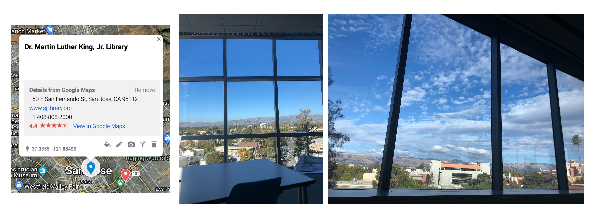This is one of the highest peak of the bay area which you can view the whole city in about the cloud level. I think people would know about this place, however it is not an easy location to visit due to how curvy and difficult the road is. Also the parking is very limited, approximately for only 7-8 cars in the parking lot, therefore I think this place can be considered as "low exposure."
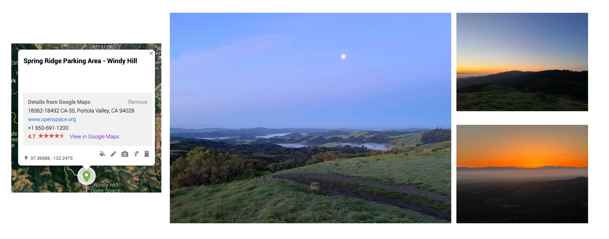This is a milk tea shop located in Little Saigon/ Vietnam Town. This center is a newly developed area specified for Asian small business, especially Vietnamese. Teahee has opened since August, 2017. Even though this shop is considerable new compared to other shops around, Teahee has a lot of regular customers and is usually busy. I have been working here since the begining because it is my sister's shop and it's the main way that I can support my family business.
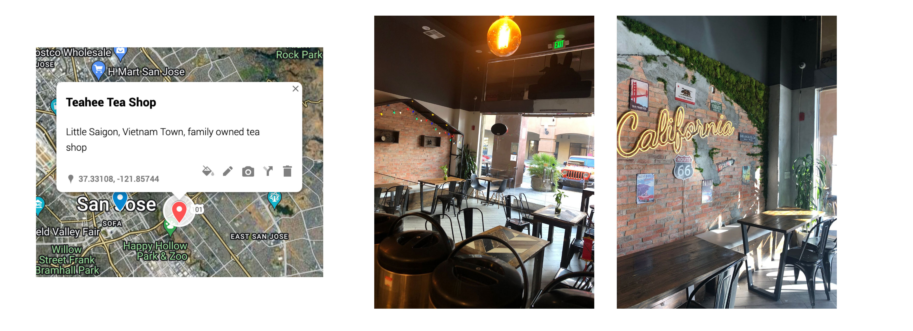First CAD Modeling Object
This is the final result of the stamp carved with the CNC router in class. The process took about 30-40 minutes to complete. including the set up time and testing.
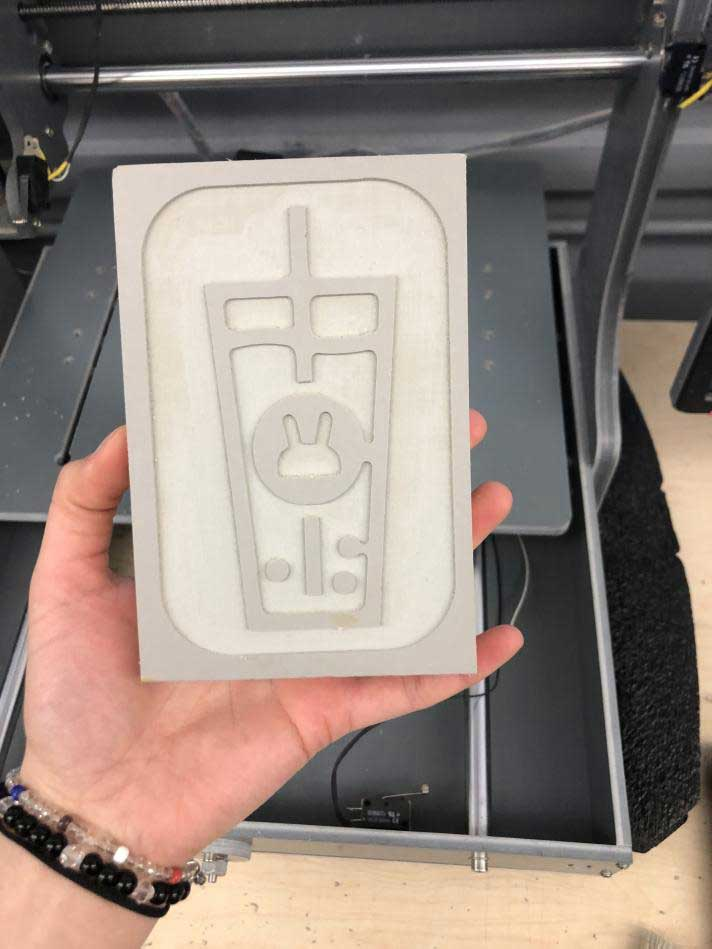 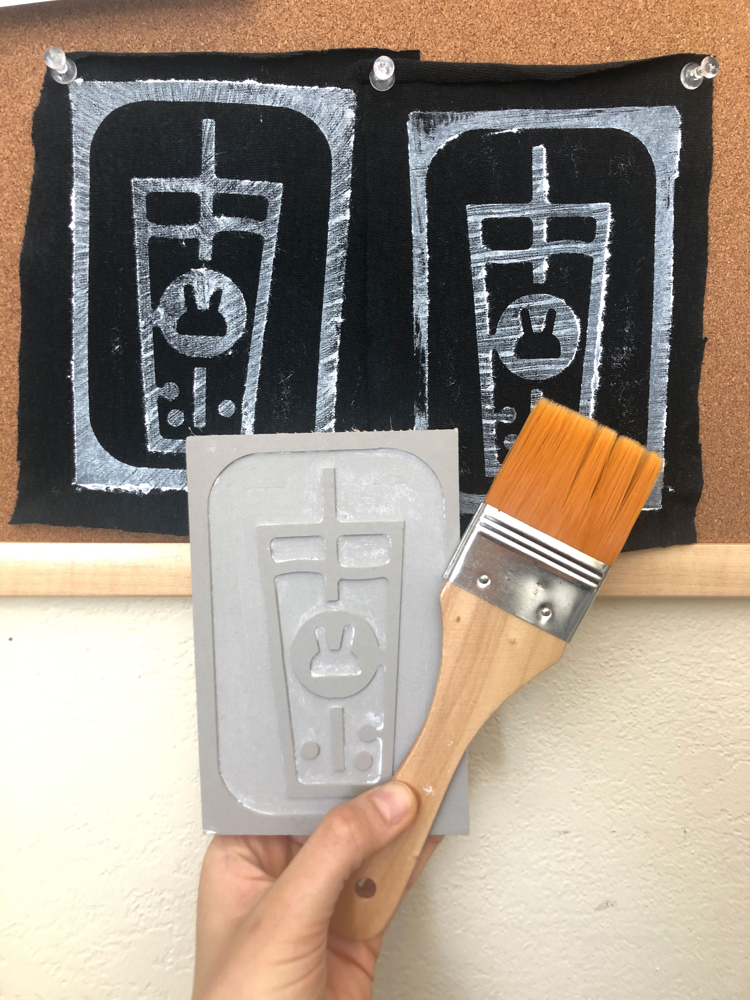Having the stamp done, I then made 5 prints on black fabric using white paint.
WIP - TBA
It was really windy that sunday. And as usual, the shop is so crowded. I didn't think that getting through the line and taping my print on the door at that moment was a good idea, so I just tape in on the wall outside infront of the shop. This location is an interesting one because it is right across Little Saigon, which is where Teahee is located. Also, Duc Huong is a Vietnamese shop, so I believe that there are many Vietnamese customers who would recognize my print.
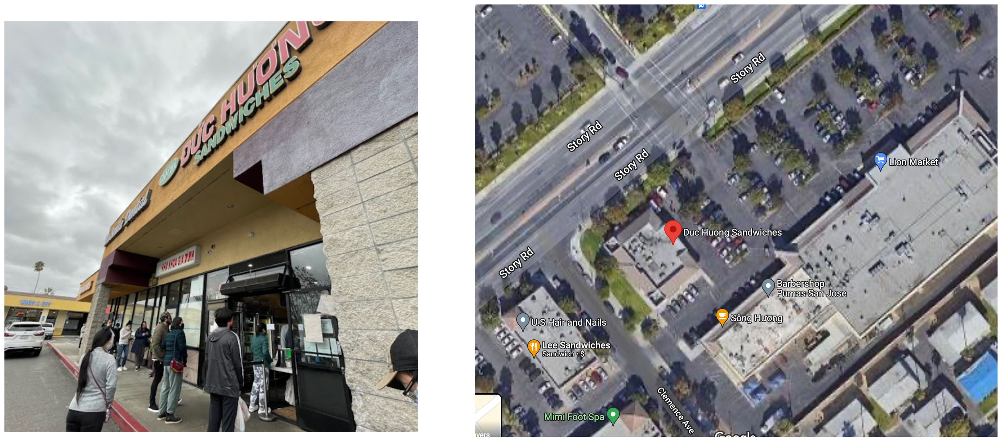 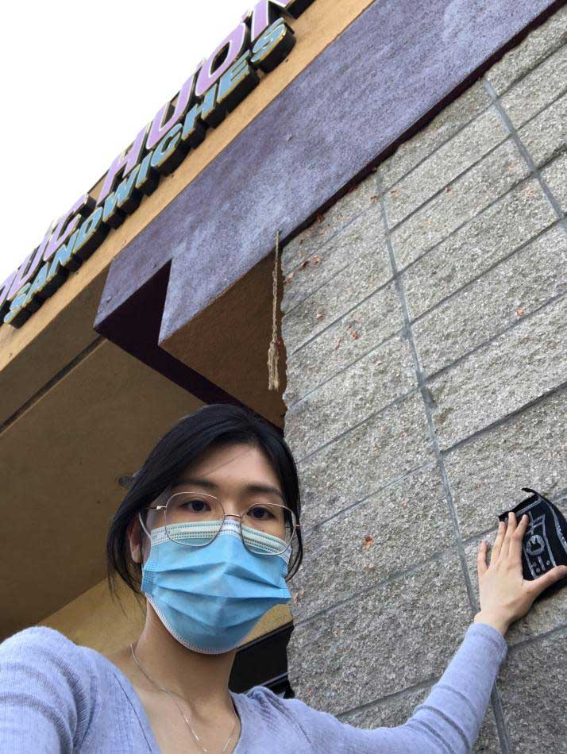 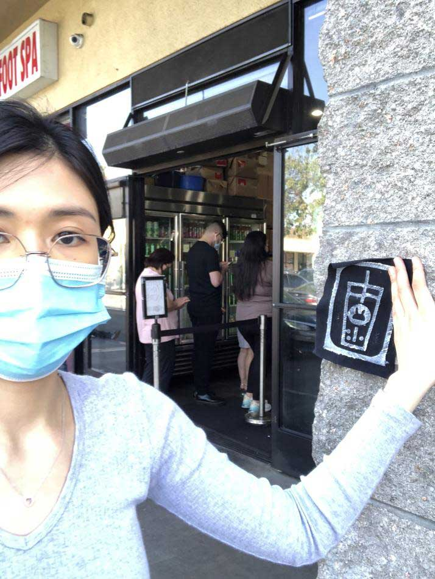(Van's Location)
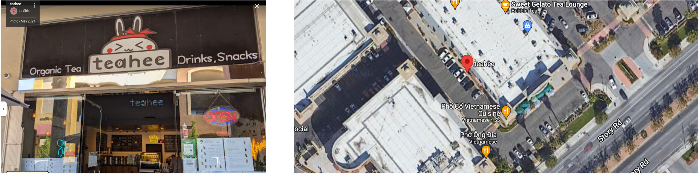This my location that I created my stamp of. The bunny is the shop mascot, and this shop's main product is boba milk tea, therefore in the print I made a cup of boba milk tea with a symbol of the shop's logo. When I was taping the print on the glass door infront of the shop, there were a couple of customers asking me what I was doing. They asked if I was putting up some kind of advertisement. I find it a bit funny that they did not recognized what my print was about at first, but then they realized it and they was really interested. I told them in short that this is a class assignment, which I have to create a stamp of a location and put it up in some other places, it might be like a scavanger hunt. Even though they didn't quite understand, but they seemed to be very happy that it is a class assignment. They said it looks like I'm playing a game.
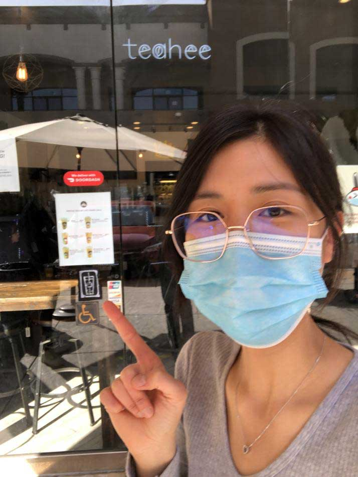 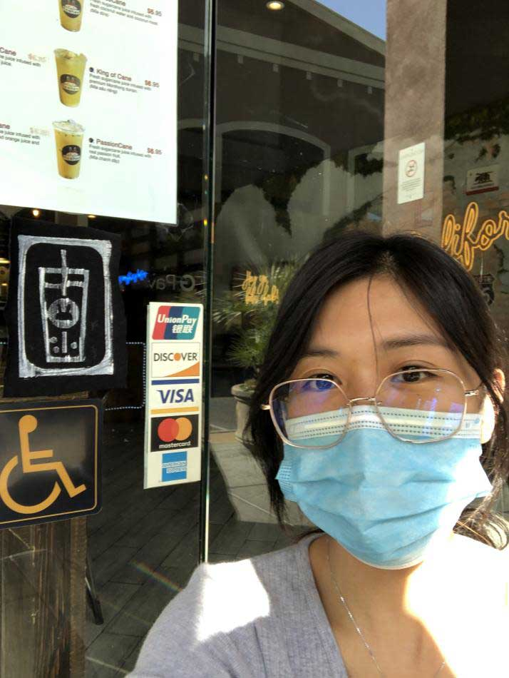(Deanna's Location)
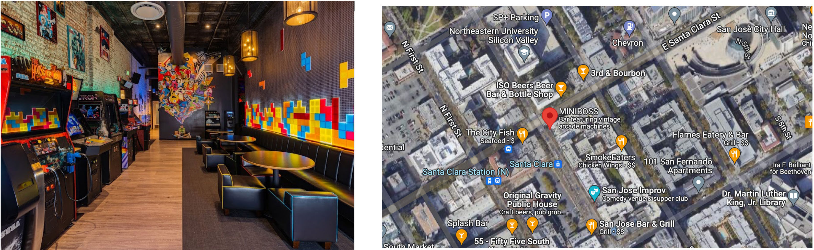I visited this location around midnight. I was surprised that it was so crowded. People seemed to have a lot of fun there. I tried to look around the bar to see if I could find anyone's stamps around, but I could not find one. I desided to tape up my stamp print right on the glass window. Nobody noticed my print at that moment. I wonder if anyone recognize what it represent for.
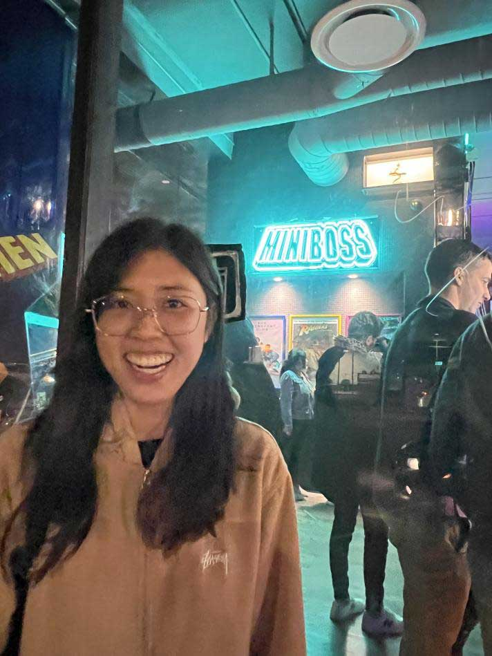 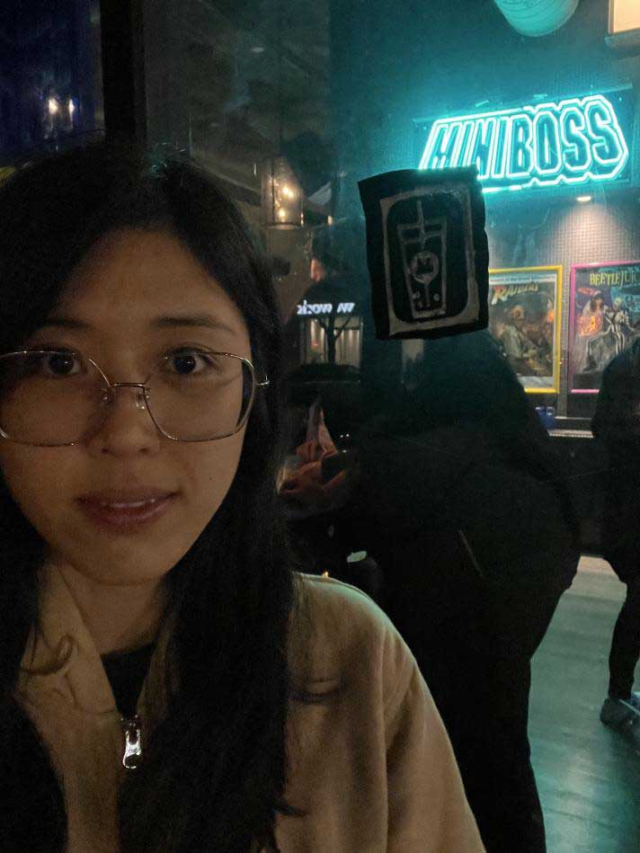 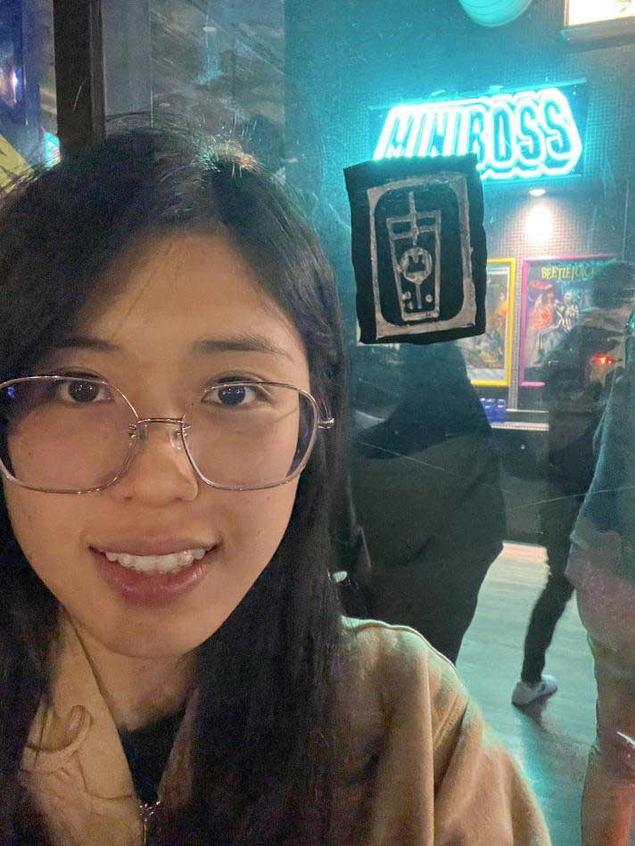(Robert's Location)
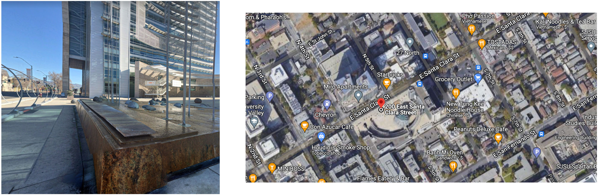After MiniBoss, I walked to Robert's location which is Jerry's Rock. At first I wanted to tape my print on a flatter and smoother surface, so I taped it on the side of a the concrete. But I notice there are many rocks at the location, and because I think Robert's main idea is for us to focus on the rocks, so I decided to tape a print right on a rock, facing the street which so that many people can see it. I went around to check if I could see anyone's print, but I did not see one. By this time, it was past midnight.
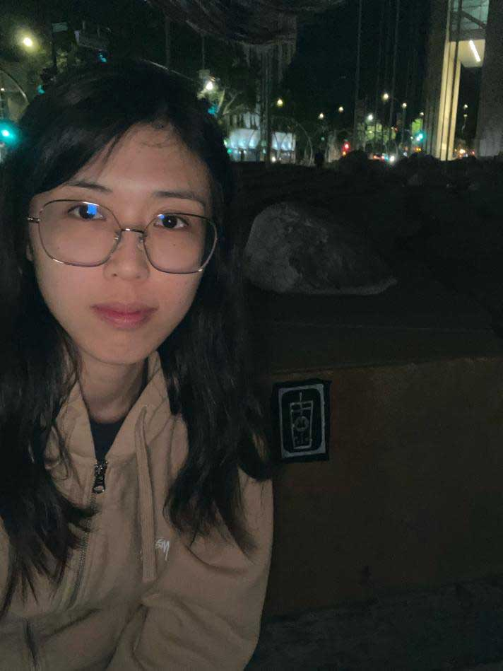 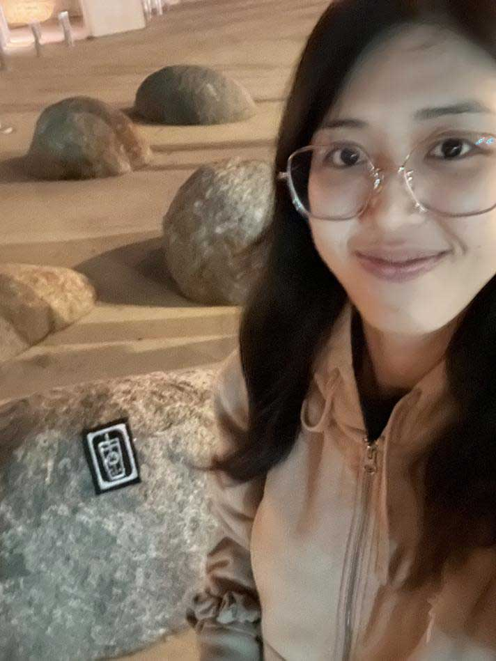Signs project is such a unique experience. It is my first time ever making a stamp in real life using CNC router. I learned how to make 3D models from sketch, and how to transfer them into files and codes for router. I also learned basic safety and steps to set up router and clean it up after using. About the Location project, I got to place my stamp print at new places that I have never been to or heard of, even though I have lived in San Jose city for 6 years. I had some crazy experience that I would never thought I would do such as going downtown at midnight (this is absolutely not the requirement but I was my only choice haha,) and talking to customers about my class project. Going outside and discovering new places already felt so nice.